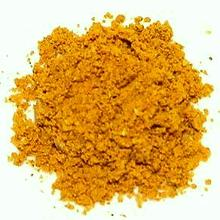

 |
Curry Powder - TrinidadTrinidad / Guyana | ||||
| Makes: Effort: Sched: DoAhead: |
3/4 cup ** 35 min Yes |
Curry Powder was brought from India (see History) and evolved into a unique spicing tailored to Caribbean tastes and ingredients. See Ingredients. | |||
|
|
------- 4 2 1/2 1/2 1/2 2 ------- 8 4 1/4 |
--- t c T T t --- c |
-- Toasted Cardamom pods Cumin seeds Coriander seeds Mustard seeds Fenugreek seeds Peppercorns black ------------ Curry Leaves (2) Cloves, whole Turmeric, ground |
Make - (35 min)
|